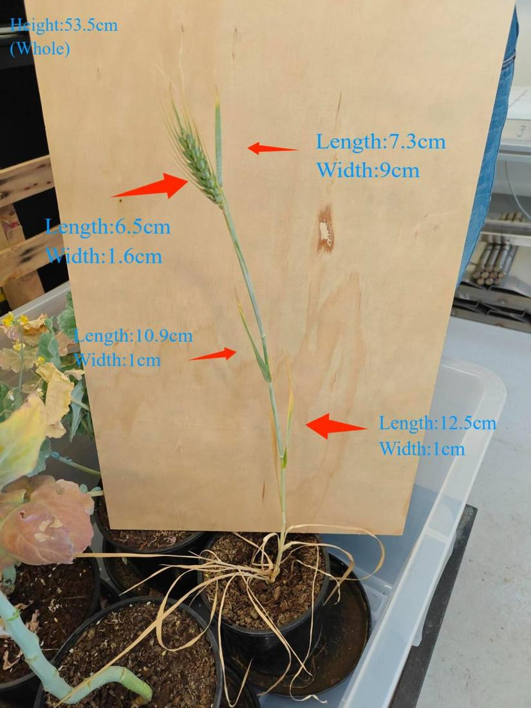
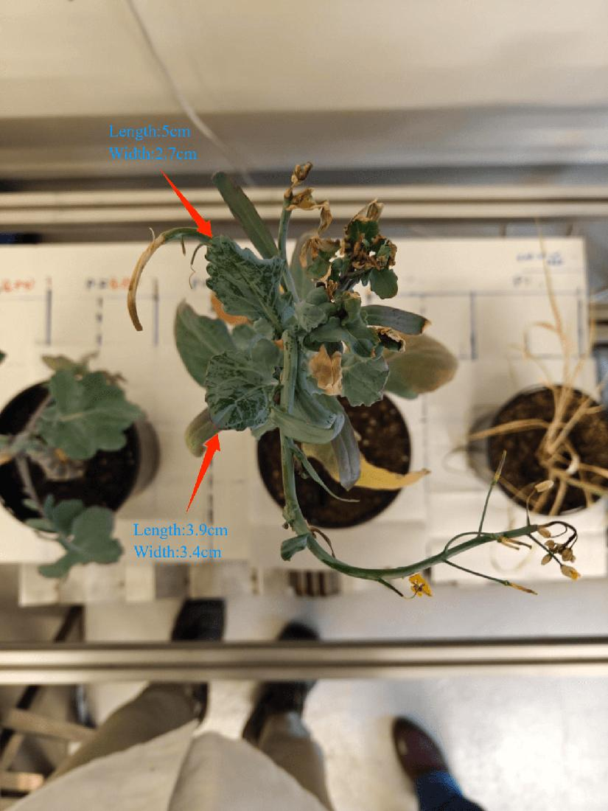
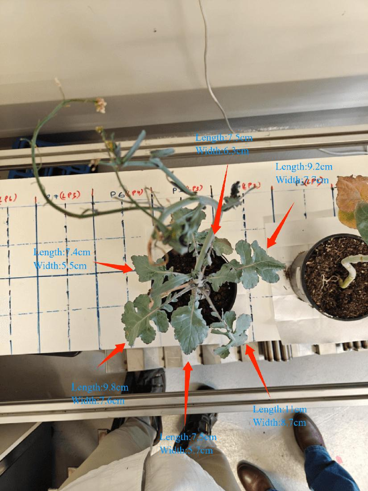
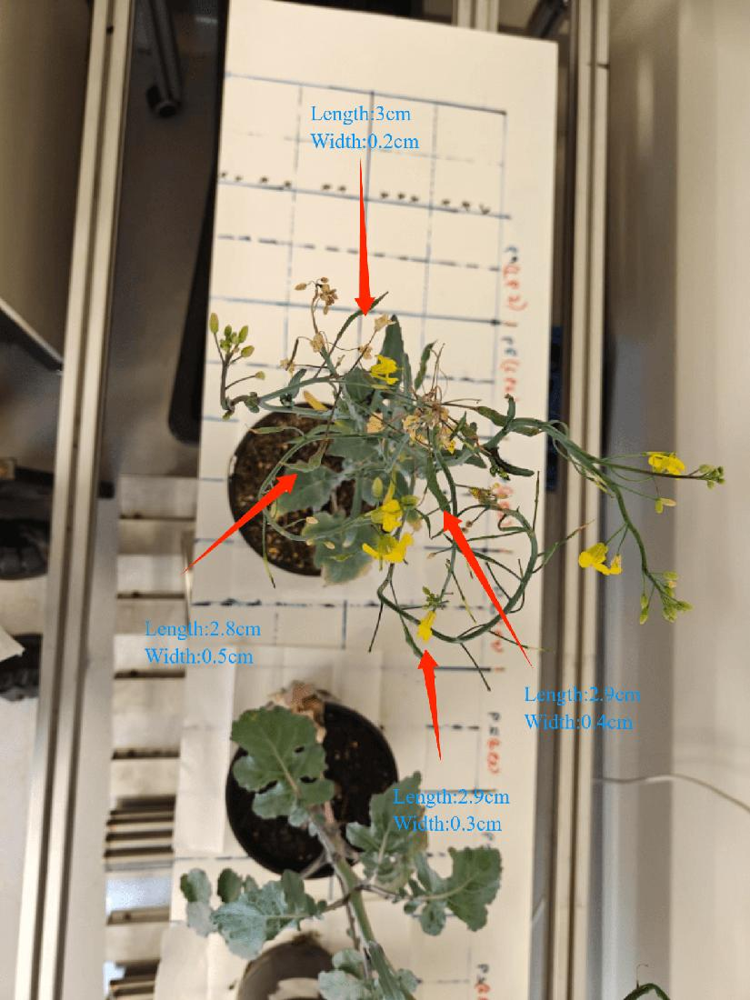
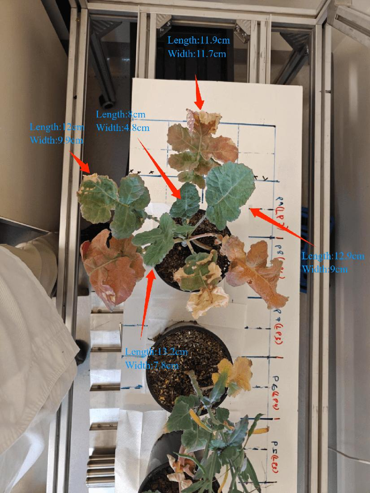

<script src="/research-assets.js"></script><!doctype html><html lang="en"><meta charset="utf-8"><meta name="viewport" content="width=device-width,initial-scale=1"><title>Five-plant traits — confirmed board</title><style>body{margin:0;background:#091a24;color:#e4edf2;font:16px/1.55 system-ui}main{max-width:1250px;margin:auto;padding:32px}h1,h2,h3{line-height:1.2}a{color:#84dfdd}.banner{padding:20px;background:#184149;border-left:5px solid #72dbce;border-radius:8px}section{margin:34px 0}.cards{display:grid;grid-template-columns:repeat(auto-fit,minmax(220px,1fr));gap:14px}.card{padding:16px;background:#102c3b;border:1px solid #33505f;border-radius:10px}img{width:100%;border-radius:5px}table{border-collapse:collapse;width:100%;font-size:14px}th,td{text-align:left;padding:10px;border-bottom:1px solid #355160;vertical-align:top}th{background:#183c4b}.scroll{overflow:auto}small,.muted{color:#b4c8d2}details{padding:12px;background:#112d3b;margin:10px 0}summary{cursor:pointer;font-weight:650}.pill{display:inline-block;background:#6b4d14;border-radius:4px;padding:2px 7px}code{font-size:13px}</style><main><h1>Five-plant traits after confirmed-board calibration</h1><p>28 September 2026 dataset · Current recalculation: 8 October 2026</p><div class="banner"><strong>Board dimensions resolved:</strong> Saswat supplied 25 mm checker squares and 18 mm markers on the 7 × 10 DICT_4X4_50 target. Current dimensions use this metric reference. <strong>Anatomical validation remains incomplete:</strong> 47 manual records are retained, with zero eligible independent accuracy pairs. No plant-height, complete-leaf-length or width accuracy score is reported.</div><p>The reconstruction contains observed surfaces only. Display-Z span is not stem-base-to-tip height; projected XY hull is not leaf area. Image masks were reused unchanged. Geometry cleanup uses the same physical tolerances after recalibration.</p><p><a href="website_tables.json">Complete table JSON</a> · <a href="canopy_descriptors.csv">Observed geometry CSV</a> · <a href="manual_dimensions_website.csv">All 47 manual records</a> · <a href="before_vs_after.json">Before / after recheck</a> · <a href="provenance.json">Provenance</a></p><section><h2>Current observed geometry</h2><div class="scroll"><table><tr><th>Plant</th><th>Retained points</th><th>D405 / L515</th><th>Observed X / Y / display-Z (cm)</th><th>XY hull (cm²)</th><th>Manual height annotation (cm)</th><th>Accepted height</th></tr><tr><td>P1</td><td>21,444</td><td>21,409 / 35</td><td>17.57 / 34.15 / 48.16</td><td>368.29</td><td>53.50</td><td>Unavailable</td></tr><tr><td>P2</td><td>72,786</td><td>72,518 / 268</td><td>34.09 / 19.56 / 51.33</td><td>378.82</td><td>51.70</td><td>Unavailable</td></tr><tr><td>P3</td><td>112,943</td><td>111,102 / 1,841</td><td>25.52 / 24.82 / 50.49</td><td>478.30</td><td>52.80</td><td>Unavailable</td></tr><tr><td>P4</td><td>68,239</td><td>68,043 / 196</td><td>17.97 / 17.65 / 44.81</td><td>235.54</td><td>52.30</td><td>Unavailable</td></tr><tr><td>P5</td><td>154,648</td><td>152,266 / 2,382</td><td>34.29 / 36.20 / 24.99</td><td>895.12</td><td>31.80</td><td>Unavailable</td></tr></table></div><p class="muted">Metre/cm coordinates are referenced to the supplied board pitch. Printed-size uncertainty, empirical L515 gain, alignment error and missing anatomy still limit physical interpretation. Fitted-board display normal is not independently verified gravity.</p></section><section><h2>What changed, and what did not</h2><p>D405 lengths increased by 2.8875% under the board-derived scale correction. L515 was rebuilt and aligned again. Re-running the same physical cleanup rules retained 430,060 points, versus 435,917 historically. This count reduction is not a quality score. No missing surface was filled.</p><div class="scroll"><table><tr><th>Plant</th><th>Historical points</th><th>Current points</th><th>Historical XY hull (conditional cm²)</th><th>Current XY hull (board cm²)</th></tr><tr><td>P1</td><td>21,891</td><td>21,444</td><td>346.76</td><td>368.29</td></tr><tr><td>P2</td><td>74,306</td><td>72,786</td><td>357.90</td><td>378.82</td></tr><tr><td>P3</td><td>113,901</td><td>112,943</td><td>451.83</td><td>478.30</td></tr><tr><td>P4</td><td>69,634</td><td>68,239</td><td>222.65</td><td>235.54</td></tr><tr><td>P5</td><td>156,185</td><td>154,648</td><td>847.51</td><td>895.12</td></tr></table></div></section><section><h2>Three observed chords; two unsupported endpoint attempts</h2><p>Frozen source-image clicks and exact original D405 point IDs were retained. Candidate endpoints were not selected again to improve agreement. Four-pixel-disk ranges describe endpoint sensitivity, not confidence intervals.</p><div class="scroll"><table><tr><th>Observed structure</th><th>Chord (cm)</th><th>Endpoint sensitivity range (cm)</th><th>Scope / limitation</th></tr><tr><td>P1.O03.observed_blade_extent</td><td>5.8058</td><td>5.120 – 6.863</td><td>Reconstructed upper narrow blade portion; the thin dry terminal tip is not included.<br><small>Magnified source review shows the thin dry terminal tip extends beyond this reconstructed endpoint. This is partial observed extent, not whole-leaf length, so no reference residual is computed.</small></td></tr><tr><td>P1.O03.true_tip_attempt</td><td>Unavailable</td><td>No supported pair</td><td>Attempted source-visible narrow blade base to fine dry terminal tip.<br><small>True dry terminal tip is selected from the source silhouette; no farther nearest point is substituted if this disk lacks reconstructed support.</small></td></tr><tr><td>P1.O04.ear_body_chord</td><td>Unavailable</td><td>No supported pair</td><td>Cereal ear body base-to-distal-body straight chord candidate, excluding awns.<br><small>Body-to-awn transition is a source-visible candidate; exact distal glume boundary has pixel-scale ambiguity. This is an ear, never a leaf.</small></td></tr><tr><td>P3.O03.blade_chord</td><td>7.6911</td><td>6.900 – 8.662</td><td>Oval blade lowest visible basal-lamina junction to terminal margin straight chord candidate.<br><small>Basal small-lobe/petiole convention remains tentative. The operator length is not independently photo-readable; this explicitly provisional comparison does not establish the measurement definition or physical accuracy.</small></td></tr><tr><td>P5.O04.terminal_lamina_chord</td><td>12.4994</td><td>11.148 – 14.159</td><td>Visible terminal lamina portion only; basal lobes/petiole-side origin are not included.<br><small>Ruler image includes basal lobes down toward a small low lobe at its zero. This raw terminal-lamina origin cannot be substituted for that ruler origin; no residual is meaningful.</small></td></tr></table></div><p>All six selected endpoints of the three numerical chords survive as current plant core points. P3’s historical base candidate pool has one point now marked uncertain; the full-fusion source-disk range is retained explicitly, with a separate cleaned-only range in JSON. One old L515 point in P5’s tip pool cannot map to the rebuilt cloud and is excluded; the other 73 candidates map exactly. The two missing-tip searches were repeated on the current cleaned cloud and still found zero candidates. <a href="chord_pool_remap_audit.json">Pool membership audit</a> · <a href="missing_endpoint_recheck.json">Missing-tip recheck</a></p><p class="banner">P3.O03 moved from <strong>7.4753 conditional cm to 7.6911 board-referenced cm</strong>. Against the operator-only 7.5 cm annotation, the arithmetic difference changed from −0.0247 to +0.1911 cm. The former near-match was not evidence of accuracy. The base definition remains tentative, and no validation metric is calculated.</p></section><section id='P1'><h2>P1 — source evidence and manual records</h2><div class='cards'><div class='card'><a href='assets/P1_source_review.jpg'></a><p>Current projection: observed top and base-region candidates, neither accepted as a true anatomical endpoint.</p></div><div class='card'><a href='assets/P1_manual_overview.jpg'></a><p>Frozen operator annotation; values and ambiguities remain unchanged.</p></div></div><p>Single cereal stem and ear, three green blade nodes and a ring of dry basal blades; first pot beside the board.</p><p><strong>Height exclusion:</strong> Dry blades overlap narrow stems at the soil junction; the measured stem origin cannot be isolated. Highest retained surface projects to the upper green blade tip. Cereal ear awns extend beyond the dense ear body and are incompletely reconstructed; the very highest biological tip is not certified.</p><div class='scroll'><table><tr><th>Record</th><th>Annotation (cm)</th><th>Photo candidate (cm)</th><th>Geometry (cm)</th><th>Status and exclusion</th><th>Evidence</th></tr><tr><td>P1.H01.height<br><small>whole_plant</small></td><td>53.50</td><td>Unavailable</td><td>Unavailable</td><td><span class='pill'>excluded_true_base_and_very_tip_unresolved</span><br>Dry blades overlap narrow stems at the soil junction; the measured stem origin cannot be isolated. Highest retained surface projects to the upper green blade tip. Cereal ear awns extend beyond the dense ear body and are incompletely reconstructed; the very highest biological tip is not certified.<br><small>No supporting height-ruler photograph is present. The annotated overview supplies 53.5 cm only; the board in shared image.jpeg is not a height-ruler observation.</small></td><td><a href='manual_reference/plant-1_measurements.jpeg'>Annotation</a></td></tr><tr><td>P1.O01.length<br><small>leaf</small></td><td>12.50</td><td>Unavailable</td><td>Unavailable</td><td><span class='pill'>excluded_correspondence_not_established</span><br>Organ identity unresolved or tentative; no nearest-shape or dimension-based assignment.<br><small>Ruler and long blade diverge. Dry tip and basal endpoint are not both located against the same ruler axis clearly enough to recover 12.5 cm independently.</small></td><td><a href='manual_reference/plant-1_measurements.jpeg'>Annotation</a><br><a href='manual_reference/plant-1/Media (3).jpeg'>Ruler 1</a></td></tr><tr><td>P1.O01.width<br><small>leaf</small></td><td>1.00</td><td>1.10</td><td>Unavailable</td><td><span class='pill'>excluded_correspondence_not_established</span><br>Organ identity unresolved or tentative; no nearest-shape or dimension-based assignment. Photographed section is not demonstrated to be maximum width.<br><small>Visible blade margins span roughly 0.0 to 1.1 cm on the reversed scale. This is the photographed section, not demonstrated maximum blade width.</small></td><td><a href='manual_reference/plant-1_measurements.jpeg'>Annotation</a><br><a href='manual_reference/plant-1/Media (4).jpeg'>Ruler 1</a></td></tr><tr><td>P1.O02.length<br><small>leaf</small></td><td>10.90</td><td>10.90</td><td>Unavailable</td><td><span class='pill'>excluded_correspondence_not_established</span><br>Organ identity unresolved or tentative; no nearest-shape or dimension-based assignment.<br><small>Tip is close to the ruler zero and blade attachment is near 10.9 cm. Approximate straight projected length; curved midrib length is not established.</small></td><td><a href='manual_reference/plant-1_measurements.jpeg'>Annotation</a><br><a href='manual_reference/plant-1/Media (1).jpeg'>Ruler 1</a></td></tr><tr><td>P1.O02.width<br><small>leaf</small></td><td>1.00</td><td>1.00</td><td>Unavailable</td><td><span class='pill'>excluded_correspondence_not_established</span><br>Organ identity unresolved or tentative; no nearest-shape or dimension-based assignment. Photographed section is not demonstrated to be maximum width.<br><small>Two visible blade margins bracket roughly one centimetre interval. Zero alignment and slight blade angle limit precision.</small></td><td><a href='manual_reference/plant-1_measurements.jpeg'>Annotation</a><br><a href='manual_reference/plant-1/Media (2).jpeg'>Ruler 1</a></td></tr><tr><td>P1.O03.length<br><small>leaf</small></td><td>7.30</td><td>7.30</td><td>Unavailable</td><td><span class='pill'>partial_chord_available_not_whole_organ_comparison</span><br>The true fine dry tip has zero supported cleaned points inside a 4px source disk at frame143152 [983,354]. The measured 5.806 cm chord ends inside the blade and is only partial observed extent.<br><small>Transparent ruler shows the blade base close to zero and tip near 7.3 cm. Approximate projected blade length.</small></td><td><a href='manual_reference/plant-1_measurements.jpeg'>Annotation</a><br><a href='manual_reference/plant-1/Media (5).jpeg'>Ruler 1</a></td></tr><tr><td>P1.O03.width<br><small>leaf</small></td><td>9.00</td><td>0.80</td><td>Unavailable</td><td><span class='pill'>excluded_homologous_geometry_or_definition_unresolved</span><br>The true fine dry tip has zero supported cleaned points inside a 4px source disk at frame143152 [983,354]. The measured 5.806 cm chord ends inside the blade and is only partial observed extent. Exact ruler cross-section correspondence is not established; no maximum-width claim.<br><small>Enlarged original crop shows left blade edge near 0.2 cm and right edge near 1.0 cm. Subtracting endpoints gives approximately 0.8 cm. The original annotation explicitly says 9 cm and is retained. Earlier 0.9 cm proposal lies within the photo reading interval but is not imposed as exact ground truth.</small></td><td><a href='manual_reference/plant-1_measurements.jpeg'>Annotation</a><br><a href='manual_reference/plant-1/Media (6).jpeg'>Ruler 1</a></td></tr><tr><td>P1.O04.length<br><small>ear</small></td><td>6.50</td><td>6.40</td><td>Unavailable</td><td><span class='pill'>excluded_homologous_geometry_or_definition_unresolved</span><br>The distal ear-body endpoint has zero supported cleaned points in the 4px source disk at frame459309 [157,469]. No farther nearest point is substituted. Ear body and awns also need a shared boundary rule.<br><small>Ear body begins about 0.3 cm and ends about 6.7 cm along ruler: approximately 6.4 cm excluding projecting awns. Ear body versus awns must be defined for 3D comparison.</small></td><td><a href='manual_reference/plant-1_measurements.jpeg'>Annotation</a><br><a href='manual_reference/plant-1/Media (7).jpeg'>Ruler 1</a></td></tr><tr><td>P1.O04.width<br><small>ear</small></td><td>1.60</td><td>Unavailable</td><td>Unavailable</td><td><span class='pill'>excluded_homologous_geometry_or_definition_unresolved</span><br>The distal ear-body endpoint has zero supported cleaned points in the 4px source disk at frame459309 [157,469]. No farther nearest point is substituted. Ear body and awns also need a shared boundary rule. Exact ruler cross-section correspondence is not established; no maximum-width claim.<br><small>Glumes and awns overlap the ruler and outer edges. The 1.6 cm annotation may include projecting structures; no defensible single body or maximum-width reading is recoverable.</small></td><td><a href='manual_reference/plant-1_measurements.jpeg'>Annotation</a><br><a href='manual_reference/plant-1/Media (8).jpeg'>Ruler 1</a></td></tr></table></div></section><section id='P2'><h2>P2 — source evidence and manual records</h2><div class='cards'><div class='card'><a href='assets/P2_source_review.jpg'></a><p>Current projection: observed top and base-region candidates, neither accepted as a true anatomical endpoint.</p></div><div class='card'><a href='assets/P2_manual_overview.jpg'></a><p>Frozen operator annotation; values and ambiguities remain unchanged.</p></div></div><p>Bent exposed basal stem, compact puckered blue-green crown, dry curled tips and hanging flowering branch; between cereal and P3.</p><p><strong>Height exclusion:</strong> Exposed curved green basal stem is visible against soil, but its precise emergence and measurement zero are unresolved. Highest retained points project to a curled yellowing edge and nearby overlapping tissue. Small terminal buds and curled margins are not a unique certified top endpoint.</p><div class='scroll'><table><tr><th>Record</th><th>Annotation (cm)</th><th>Photo candidate (cm)</th><th>Geometry (cm)</th><th>Status and exclusion</th><th>Evidence</th></tr><tr><td>P2.H01.height<br><small>whole_plant</small></td><td>51.70</td><td>Unavailable</td><td>Unavailable</td><td><span class='pill'>excluded_true_base_and_very_tip_unresolved</span><br>Exposed curved green basal stem is visible against soil, but its precise emergence and measurement zero are unresolved. Highest retained points project to a curled yellowing edge and nearby overlapping tissue. Small terminal buds and curled margins are not a unique certified top endpoint.<br><small>Two-ruler setup is visible, but hand/plant obscures an unambiguous lower ruler zero or joining offset. Highest curled tip also changes pose between photographs. Cannot independently recompute 51.7 cm to 0.1 cm.</small></td><td><a href='manual_reference/plant-2_measurements_02.png'>Annotation</a><br><a href='manual_reference/plant-2/Media (1).jpeg'>Ruler 1</a><br><a href='manual_reference/plant-2/Media (2).jpeg'>Ruler 2</a><br><a href='manual_reference/plant-2/Media (3).jpeg'>Ruler 3</a></td></tr><tr><td>P2.O01.length<br><small>leaf</small></td><td>5.00</td><td>Unavailable</td><td>Unavailable</td><td><span class='pill'>excluded_correspondence_not_established</span><br>Organ identity unresolved or tentative; no nearest-shape or dimension-based assignment.<br><small>Tip is near the 5 cm region but ruler zero/basal blade endpoint lies among overlapping curled tissue. Do not equate a tip graduation with blade length without a visible base.</small></td><td><a href='manual_reference/plant-2_measurements_01.png'>Annotation</a><br><a href='manual_reference/plant-2/Leaf-1/Media.jpeg'>Ruler 1</a></td></tr><tr><td>P2.O01.width<br><small>leaf</small></td><td>2.70</td><td>Unavailable</td><td>Unavailable</td><td><span class='pill'>excluded_correspondence_not_established</span><br>Organ identity unresolved or tentative; no nearest-shape or dimension-based assignment. Photographed section is not demonstrated to be maximum width.<br><small>Opaque ruler hides the full width section and blade is curled. The visible margins near the ruler do not prove the maximum width or the exact 2.7 cm annotation.</small></td><td><a href='manual_reference/plant-2_measurements_01.png'>Annotation</a><br><a href='manual_reference/plant-2/Leaf-1/Media (1).jpeg'>Ruler 1</a></td></tr><tr><td>P2.O02.length<br><small>leaf</small></td><td>3.90</td><td>3.90</td><td>Unavailable</td><td><span class='pill'>excluded_correspondence_not_established</span><br>Organ identity unresolved or tentative; no nearest-shape or dimension-based assignment.<br><small>Held blade extends approximately from 0.1 to 4.0 cm; attachment/terminal margins are visible beside ruler but do not support millimetre precision.</small></td><td><a href='manual_reference/plant-2_measurements_01.png'>Annotation</a><br><a href='manual_reference/plant-2/Leaf-2/Media.jpeg'>Ruler 1</a></td></tr><tr><td>P2.O02.width<br><small>leaf</small></td><td>3.40</td><td>3.50</td><td>Unavailable</td><td><span class='pill'>excluded_correspondence_not_established</span><br>Organ identity unresolved or tentative; no nearest-shape or dimension-based assignment. Photographed section is not demonstrated to be maximum width.<br><small>Upper leaf margin is around 0.4 cm and opposite margin around 3.9 cm. Endpoint subtraction gives about 3.5 cm, consistent with but not copied from source 3.4 cm.</small></td><td><a href='manual_reference/plant-2_measurements_01.png'>Annotation</a><br><a href='manual_reference/plant-2/Leaf-2/Media (1).jpeg'>Ruler 1</a></td></tr></table></div></section><section id='P3'><h2>P3 — source evidence and manual records</h2><div class='cards'><div class='card'><a href='assets/P3_source_review.jpg'></a><p>Current projection: observed top and base-region candidates, neither accepted as a true anatomical endpoint.</p></div><div class='card'><a href='assets/P3_manual_overview.jpg'></a><p>Frozen operator annotation; values and ambiguities remain unchanged.</p></div></div><p>Six broad lobed leaves around a purple petiole junction and a long arcing flowering stalk; between compact P2 and sparse P4.</p><p><strong>Height exclusion:</strong> Purple/green petiole junction is visible, but the soil-level stem origin is beneath overlapping tissue. Branch-junction region only. Highest retained points lie in overlapping distal stalk/leaf tissue near the lower image edge. Long flowering-stem extremities and true terminal point are not fully resolved.</p><div class='scroll'><table><tr><th>Record</th><th>Annotation (cm)</th><th>Photo candidate (cm)</th><th>Geometry (cm)</th><th>Status and exclusion</th><th>Evidence</th></tr><tr><td>P3.H01.height<br><small>whole_plant</small></td><td>52.80</td><td>Unavailable</td><td>Unavailable</td><td><span class='pill'>excluded_true_base_and_very_tip_unresolved</span><br>Purple/green petiole junction is visible, but the soil-level stem origin is beneath overlapping tissue. Branch-junction region only. Highest retained points lie in overlapping distal stalk/leaf tissue near the lower image edge. Long flowering-stem extremities and true terminal point are not fully resolved.<br><small>Hand covers the ruler junction; the whole-plant frame does not show an unambiguous stem-base zero. Media (2).jpeg and Media (3).jpeg are byte-identical. No independent 52.8 cm sum can be justified.</small></td><td><a href='manual_reference/plant-3_measurements_02.png'>Annotation</a><br><a href='manual_reference/plant-3/Media (1).jpeg'>Ruler 1</a><br><a href='manual_reference/plant-3/Media (2).jpeg'>Ruler 2</a><br><a href='manual_reference/plant-3/Media (3).jpeg'>Ruler 3</a></td></tr><tr><td>P3.O01.length<br><small>leaf</small></td><td>7.40</td><td>Unavailable</td><td>Unavailable</td><td><span class='pill'>excluded_homologous_geometry_or_definition_unresolved</span><br>The lateral blade attachment is crossed by neighbouring petiole/stalk tissue. Its complete basal boundary and lobed width section have not been frozen; the saved pool is interior tissue.<br><small>Tip lies near 7.4 cm but basal lobes/petiole boundary is not unambiguously at zero. No numerical length is inferred from the tip mark alone.</small></td><td><a href='manual_reference/plant-3_measurements_01.png'>Annotation</a><br><a href='manual_reference/plant-3/Leaf-5/Media.jpeg'>Ruler 1</a></td></tr><tr><td>P3.O01.width<br><small>leaf</small></td><td>5.50</td><td>5.40</td><td>Unavailable</td><td><span class='pill'>excluded_homologous_geometry_or_definition_unresolved</span><br>The lateral blade attachment is crossed by neighbouring petiole/stalk tissue. Its complete basal boundary and lobed width section have not been frozen; the saved pool is interior tissue. Exact ruler cross-section correspondence is not established; no maximum-width claim.<br><small>Upper blade edge near 5.5 cm and lower edge near 0.1 cm give about 5.4 cm. Lobed margins and ruler angle justify a broad visual interval.</small></td><td><a href='manual_reference/plant-3_measurements_01.png'>Annotation</a><br><a href='manual_reference/plant-3/Leaf-5/Media (1).jpeg'>Ruler 1</a></td></tr><tr><td>P3.O02.length<br><small>leaf</small></td><td>9.80</td><td>Unavailable</td><td>Unavailable</td><td><span class='pill'>excluded_homologous_geometry_or_definition_unresolved</span><br>Basal lobes and hole boundaries overlap a dry underlying blade; complete blade origin and the same ruler section are not frozen in 3D.<br><small>Tip is near the 9.8-10.0 cm region, but hand/leaf obscures the exact base and zero alignment. Source 9.8 cm is not independently verified.</small></td><td><a href='manual_reference/plant-3_measurements_01.png'>Annotation</a><br><a href='manual_reference/plant-3/Leaf-4/Media.jpeg'>Ruler 1</a></td></tr><tr><td>P3.O02.width<br><small>leaf</small></td><td>7.60</td><td>Unavailable</td><td>Unavailable</td><td><span class='pill'>excluded_homologous_geometry_or_definition_unresolved</span><br>Basal lobes and hole boundaries overlap a dry underlying blade; complete blade origin and the same ruler section are not frozen in 3D. Exact ruler cross-section correspondence is not established; no maximum-width claim.<br><small>One margin lies near 7.5-7.6 cm; the opposite edge/zero alignment is obscured. Do not treat that endpoint as a width.</small></td><td><a href='manual_reference/plant-3_measurements_01.png'>Annotation</a><br><a href='manual_reference/plant-3/Leaf-4/Media (1).jpeg'>Ruler 1</a></td></tr><tr><td>P3.O03.length<br><small>leaf</small></td><td>7.50</td><td>Unavailable</td><td>7.6911</td><td><span class='pill'>provisional_operator_only_chord_comparison</span><br>Same frozen D405 source endpoints after board gauge correction. The source-supported chord is provisional; anatomical base convention remains tentative and the 7.5 cm reference is operator annotation only. No eligible validation pair.<br><small>Tip is around the 7.5 cm region; ruler zero and the chosen blade-base endpoint are obscured by hand and basal tissue.</small></td><td><a href='manual_reference/plant-3_measurements_01.png'>Annotation</a><br><a href='manual_reference/plant-3/Leaf-3/Media.jpeg'>Ruler 1</a></td></tr><tr><td>P3.O03.width<br><small>leaf</small></td><td>5.70</td><td>Unavailable</td><td>Unavailable</td><td><span class='pill'>excluded_homologous_geometry_or_definition_unresolved</span><br>One provisional source-endpoint chord is available separately. The operator reference is not independently photo-readable and basal-lobe/petiole convention remains tentative. Exact ruler cross-section correspondence is not established; no maximum-width claim.<br><small>Lobed margins cross opposite sides of a broad opaque ruler at different positions. The exact lower offset and maximum section are not unambiguous; no 5.7 cm value is imputed.</small></td><td><a href='manual_reference/plant-3_measurements_01.png'>Annotation</a><br><a href='manual_reference/plant-3/Leaf-3/Media (1).jpeg'>Ruler 1</a></td></tr><tr><td>P3.O04.length<br><small>leaf</small></td><td>11.00</td><td>11.00</td><td>Unavailable</td><td><span class='pill'>excluded_homologous_geometry_or_definition_unresolved</span><br>The petiole-to-lobed-blade origin and complete lobe contour have not been frozen across source views. The interior pool omits terminal margins.<br><small>Attachment-side blade origin is near zero and opposite tip near 11.0 cm; both are visible beside the ruler. Straight projected length.</small></td><td><a href='manual_reference/plant-3_measurements_01.png'>Annotation</a><br><a href='manual_reference/plant-3/Leaf-2/Media.jpeg'>Ruler 1</a></td></tr><tr><td>P3.O04.width<br><small>leaf</small></td><td>8.70</td><td>8.70</td><td>Unavailable</td><td><span class='pill'>excluded_homologous_geometry_or_definition_unresolved</span><br>The petiole-to-lobed-blade origin and complete lobe contour have not been frozen across source views. The interior pool omits terminal margins. Exact ruler cross-section correspondence is not established; no maximum-width claim.<br><small>Bottom margin is close to zero and top margin near 8.7 cm. Thumb covers intermediate graduations, but the end regions are visible.</small></td><td><a href='manual_reference/plant-3_measurements_01.png'>Annotation</a><br><a href='manual_reference/plant-3/Leaf-2/Media (1).jpeg'>Ruler 1</a></td></tr><tr><td>P3.O05.length<br><small>leaf</small></td><td>9.20</td><td>9.20</td><td>Unavailable</td><td><span class='pill'>excluded_homologous_geometry_or_definition_unresolved</span><br>The lobed blade attachment is next to a crossing stalk; a complete blade origin and photographed width-section edges are not yet isolated in 3D.<br><small>Transparent ruler shows blade-base region at zero and tip about 9.2 cm. Blade is held flat; this is an approximate chord/projection length.</small></td><td><a href='manual_reference/plant-3_measurements_01.png'>Annotation</a><br><a href='manual_reference/plant-3/Leaf-1/Media.jpeg'>Ruler 1</a></td></tr><tr><td>P3.O05.width<br><small>leaf</small></td><td>7.70</td><td>7.70</td><td>Unavailable</td><td><span class='pill'>excluded_homologous_geometry_or_definition_unresolved</span><br>The lobed blade attachment is next to a crossing stalk; a complete blade origin and photographed width-section edges are not yet isolated in 3D. Exact ruler cross-section correspondence is not established; no maximum-width claim.<br><small>Transparent ruler shows left margin near zero and right margin near 7.7 cm. Both leaf edges are visible through/along ruler.</small></td><td><a href='manual_reference/plant-3_measurements_01.png'>Annotation</a><br><a href='manual_reference/plant-3/Leaf-1/Media (1).jpeg'>Ruler 1</a></td></tr><tr><td>P3.O06.length<br><small>leaf</small></td><td>7.50</td><td>Unavailable</td><td>Unavailable</td><td><span class='pill'>excluded_correspondence_not_established</span><br>Organ identity unresolved or tentative; no nearest-shape or dimension-based assignment.<br><small>Blade base/zero is hidden by tissue and hand. The approximately 7.5 cm tip location alone cannot establish length.</small></td><td><a href='manual_reference/plant-3_measurements_01.png'>Annotation</a><br><a href='manual_reference/plant-3/Leaf-6/Media.jpeg'>Ruler 1</a></td></tr><tr><td>P3.O06.width<br><small>leaf</small></td><td>6.30</td><td>Unavailable</td><td>Unavailable</td><td><span class='pill'>excluded_correspondence_not_established</span><br>Organ identity unresolved or tentative; no nearest-shape or dimension-based assignment. Photographed section is not demonstrated to be maximum width.<br><small>Ruler traverses lobed blade; lower margin and adjacent foreground blade overlap the scale. Exact corresponding endpoints/maximum width remain ambiguous.</small></td><td><a href='manual_reference/plant-3_measurements_01.png'>Annotation</a><br><a href='manual_reference/plant-3/Leaf-6/Media (1).jpeg'>Ruler 1</a></td></tr></table></div></section><section id='P4'><h2>P4 — source evidence and manual records</h2><div class='cards'><div class='card'><a href='assets/P4_source_review.jpg'></a><p>Current projection: observed top and base-region candidates, neither accepted as a true anatomical endpoint.</p></div><div class='card'><a href='assets/P4_manual_overview.jpg'></a><p>Frozen operator annotation; values and ambiguities remain unchanged.</p></div></div><p>Sparse branched flowering plant with yellow flowers and narrow pod-like structures; adjacent to P3 and red-brown P5.</p><p><strong>Height exclusion:</strong> Pot-centre origin is obscured by leaves and crossing flowering stems. Region candidate only; no visible stem-base endpoint. Highest retained surface projects to a terminal pale bud/flower cluster, but its exact outermost endpoint and complete depth support remain uncertain.</p><div class='scroll'><table><tr><th>Record</th><th>Annotation (cm)</th><th>Photo candidate (cm)</th><th>Geometry (cm)</th><th>Status and exclusion</th><th>Evidence</th></tr><tr><td>P4.H01.height<br><small>whole_plant</small></td><td>52.30</td><td>Unavailable</td><td>Unavailable</td><td><span class='pill'>excluded_true_base_and_very_tip_unresolved</span><br>Pot-centre origin is obscured by leaves and crossing flowering stems. Region candidate only; no visible stem-base endpoint. Highest retained surface projects to a terminal pale bud/flower cluster, but its exact outermost endpoint and complete depth support remain uncertain.<br><small>Two rulers are visible; their joining/overlap point and exact stem-base zero are not simultaneously readable. Top inflorescence is visible, but adding a nominal 30 cm to its upper-ruler reading is unjustified.</small></td><td><a href='manual_reference/plant-4_measurements_02.png'>Annotation</a><br><a href='manual_reference/plant-4/Media (1).jpeg'>Ruler 1</a><br><a href='manual_reference/plant-4/Media (2).jpeg'>Ruler 2</a></td></tr><tr><td>P4.O01.length<br><small>uncertain_leaf_or_pod</small></td><td>3.00</td><td>Unavailable</td><td>Unavailable</td><td><span class='pill'>excluded_leaf_or_pod_identity_unresolved</span><br>Organ identity unresolved or tentative; no nearest-shape or dimension-based assignment. Leaf-versus-pod identity unresolved.<br><small>Organ runs along roughly the first 3 cm; distinguishing organ-body base from stalk is unresolved. Closeups appear pod-like; user has not confirmed leaf versus reproductive organ.</small></td><td><a href='manual_reference/plant-4_measurements_01.png'>Annotation</a><br><a href='manual_reference/plant-4/Leaf-1/Media.jpeg'>Ruler 1</a></td></tr><tr><td>P4.O01.width<br><small>uncertain_leaf_or_pod</small></td><td>0.20</td><td>Unavailable</td><td>Unavailable</td><td><span class='pill'>excluded_leaf_or_pod_identity_unresolved</span><br>Organ identity unresolved or tentative; no nearest-shape or dimension-based assignment. Leaf-versus-pod identity unresolved. Photographed section is not demonstrated to be maximum width.<br><small>Very narrow organ and ruler/hand obscure both exact width endpoints; 0.2 cm cannot be independently certified. Closeups appear pod-like; user has not confirmed leaf versus reproductive organ.</small></td><td><a href='manual_reference/plant-4_measurements_01.png'>Annotation</a><br><a href='manual_reference/plant-4/Leaf-1/Media (1).jpeg'>Ruler 1</a></td></tr><tr><td>P4.O02.length<br><small>uncertain_leaf_or_pod</small></td><td>2.80</td><td>Unavailable</td><td>Unavailable</td><td><span class='pill'>excluded_leaf_or_pod_identity_unresolved</span><br>Organ identity unresolved or tentative; no nearest-shape or dimension-based assignment. Leaf-versus-pod identity unresolved.<br><small>Curved narrow organ follows roughly 2.8 cm of ruler, but straight chord versus curved body and basal endpoint are unresolved. Closeups appear pod-like; user has not confirmed leaf versus reproductive organ.</small></td><td><a href='manual_reference/plant-4_measurements_01.png'>Annotation</a><br><a href='manual_reference/plant-4/Leaf-2/Media.jpeg'>Ruler 1</a></td></tr><tr><td>P4.O02.width<br><small>uncertain_leaf_or_pod</small></td><td>0.50</td><td>Unavailable</td><td>Unavailable</td><td><span class='pill'>excluded_leaf_or_pod_identity_unresolved</span><br>Organ identity unresolved or tentative; no nearest-shape or dimension-based assignment. Leaf-versus-pod identity unresolved. Photographed section is not demonstrated to be maximum width.<br><small>Organ lies partly beneath ruler end; both boundaries are not visible on a common graduated section. Source 0.5 cm remains unverified. Closeups appear pod-like; user has not confirmed leaf versus reproductive organ.</small></td><td><a href='manual_reference/plant-4_measurements_01.png'>Annotation</a><br><a href='manual_reference/plant-4/Leaf-2/Media (1).jpeg'>Ruler 1</a></td></tr><tr><td>P4.O03.length<br><small>uncertain_leaf_or_pod</small></td><td>2.90</td><td>Unavailable</td><td>Unavailable</td><td><span class='pill'>excluded_leaf_or_pod_identity_unresolved</span><br>Organ identity unresolved or tentative; no nearest-shape or dimension-based assignment. Leaf-versus-pod identity unresolved.<br><small>Narrow body is near the first 2.9 cm, but body/stalk endpoint and alignment are not clear enough for a direct accepted reading. Closeups appear pod-like; user has not confirmed leaf versus reproductive organ.</small></td><td><a href='manual_reference/plant-4_measurements_01.png'>Annotation</a><br><a href='manual_reference/plant-4/Leaf-3/Media.jpeg'>Ruler 1</a></td></tr><tr><td>P4.O03.width<br><small>uncertain_leaf_or_pod</small></td><td>0.30</td><td>Unavailable</td><td>Unavailable</td><td><span class='pill'>excluded_leaf_or_pod_identity_unresolved</span><br>Organ identity unresolved or tentative; no nearest-shape or dimension-based assignment. Leaf-versus-pod identity unresolved. Photographed section is not demonstrated to be maximum width.<br><small>Organ is above ruler end without both width edges located against graduations. Source 0.3 cm remains unverified. Closeups appear pod-like; user has not confirmed leaf versus reproductive organ.</small></td><td><a href='manual_reference/plant-4_measurements_01.png'>Annotation</a><br><a href='manual_reference/plant-4/Leaf-3/Media (1).jpeg'>Ruler 1</a></td></tr><tr><td>P4.O04.length<br><small>uncertain_leaf_or_pod</small></td><td>2.90</td><td>Unavailable</td><td>Unavailable</td><td><span class='pill'>excluded_leaf_or_pod_identity_unresolved</span><br>Organ identity unresolved or tentative; no nearest-shape or dimension-based assignment. Leaf-versus-pod identity unresolved.<br><small>Elongated organ spans roughly the first 2.9 cm; the body-to-pedicel junction and organ kind are unresolved. Closeups appear pod-like; user has not confirmed leaf versus reproductive organ.</small></td><td><a href='manual_reference/plant-4_measurements_01.png'>Annotation</a><br><a href='manual_reference/plant-4/Leaf-4/Media.jpeg'>Ruler 1</a></td></tr><tr><td>P4.O04.width<br><small>uncertain_leaf_or_pod</small></td><td>0.40</td><td>Unavailable</td><td>Unavailable</td><td><span class='pill'>excluded_leaf_or_pod_identity_unresolved</span><br>Organ identity unresolved or tentative; no nearest-shape or dimension-based assignment. Leaf-versus-pod identity unresolved. Photographed section is not demonstrated to be maximum width.<br><small>A narrow green structure spans roughly the first few millimetres, but exact margins/body convention are uncertain. Source 0.4 cm remains unverified. Closeups appear pod-like; user has not confirmed leaf versus reproductive organ.</small></td><td><a href='manual_reference/plant-4_measurements_01.png'>Annotation</a><br><a href='manual_reference/plant-4/Leaf-4/Media (1).jpeg'>Ruler 1</a></td></tr></table></div></section><section id='P5'><h2>P5 — source evidence and manual records</h2><div class='cards'><div class='card'><a href='assets/P5_source_review.jpg'></a><p>Current projection: observed top and base-region candidates, neither accepted as a true anatomical endpoint.</p></div><div class='card'><a href='assets/P5_manual_overview.jpg'></a><p>Frozen operator annotation; values and ambiguities remain unchanged.</p></div></div><p>Broad green leaves interspersed with distinctive rust-brown damaged lobed blades, small central leaf and radial petioles; last pot.</p><p><strong>Height exclusion:</strong> Radial petiole junction and lower curved stem are visible; actual soil-emergence point is hidden by the stem/leaf cluster. Highest retained points project to the terminal margin of the left-facing lobed green O05 leaf candidate, a plausible top surface. This does not establish all-terminal completeness or the stem origin.</p><div class='scroll'><table><tr><th>Record</th><th>Annotation (cm)</th><th>Photo candidate (cm)</th><th>Geometry (cm)</th><th>Status and exclusion</th><th>Evidence</th></tr><tr><td>P5.H01.height<br><small>whole_plant</small></td><td>31.80</td><td>Unavailable</td><td>Unavailable</td><td><span class='pill'>excluded_true_base_and_very_tip_unresolved</span><br>Radial petiole junction and lower curved stem are visible; actual soil-emergence point is hidden by the stem/leaf cluster. Highest retained points project to the terminal margin of the left-facing lobed green O05 leaf candidate, a plausible top surface. This does not establish all-terminal completeness or the stem origin.<br><small>The saved height photo shows a 30 cm ruler and the highest leaf extends beyond the visible calibrated end. Base alignment is partly hidden. Do not extrapolate an unseen 31.8 cm graduation.</small></td><td><a href='manual_reference/plant-5_measurements_02.png'>Annotation</a><br><a href='manual_reference/plant-5/Media (1).jpeg'>Ruler 1</a></td></tr><tr><td>P5.O01.length<br><small>leaf</small></td><td>12.00</td><td>Unavailable</td><td>Unavailable</td><td><span class='pill'>excluded_homologous_geometry_or_definition_unresolved</span><br>The blade has curled damaged/necrotic margins; the rule for including folded dry tissue and full basal boundary is not frozen. Source ruler length was not independently readable.<br><small>Opaque ruler and thumb hide the length tip/base alignment. Blade damage and lobes make source 12 cm not independently recoverable.</small></td><td><a href='manual_reference/plant-5_measurements_01.png'>Annotation</a><br><a href='manual_reference/plant-5/leaf-4/Media.jpeg'>Ruler 1</a></td></tr><tr><td>P5.O01.width<br><small>leaf</small></td><td>9.90</td><td>9.80</td><td>Unavailable</td><td><span class='pill'>excluded_homologous_geometry_or_definition_unresolved</span><br>The blade has curled damaged/necrotic margins; the rule for including folded dry tissue and full basal boundary is not frozen. Source ruler length was not independently readable. Exact ruler cross-section correspondence is not established; no maximum-width claim.<br><small>Opposite lobed margins lie near 0.3 and 10.1 cm, giving about 9.8 cm. Hand-held damaged blade and ruler plane limit precision.</small></td><td><a href='manual_reference/plant-5_measurements_01.png'>Annotation</a><br><a href='manual_reference/plant-5/leaf-4/Media (1).jpeg'>Ruler 1</a></td></tr><tr><td>P5.O02.length<br><small>leaf</small></td><td>8.00</td><td>Unavailable</td><td>Unavailable</td><td><span class='pill'>excluded_homologous_geometry_or_definition_unresolved</span><br>The small central blade base is adjacent to the crowded petiole fork; its exact lamina origin and obscured ruler endpoints are unresolved.<br><small>Small central blade lies behind ruler and hand; one endpoint is occluded. The 8 cm annotation is retained but no unseen tip/base is inferred.</small></td><td><a href='manual_reference/plant-5_measurements_01.png'>Annotation</a><br><a href='manual_reference/plant-5/leaf-3/Media.jpeg'>Ruler 1</a></td></tr><tr><td>P5.O02.width<br><small>leaf</small></td><td>4.80</td><td>Unavailable</td><td>Unavailable</td><td><span class='pill'>excluded_homologous_geometry_or_definition_unresolved</span><br>The small central blade base is adjacent to the crowded petiole fork; its exact lamina origin and obscured ruler endpoints are unresolved. Exact ruler cross-section correspondence is not established; no maximum-width claim.<br><small>Ruler and thumb overlap the small central blade. One width margin is hidden; a visible end near 5 cm does not independently establish source 4.8 cm.</small></td><td><a href='manual_reference/plant-5_measurements_01.png'>Annotation</a><br><a href='manual_reference/plant-5/leaf-3/Media (1).jpeg'>Ruler 1</a></td></tr><tr><td>P5.O03.length<br><small>leaf</small></td><td>11.90</td><td>Unavailable</td><td>Unavailable</td><td><span class='pill'>excluded_homologous_geometry_or_definition_unresolved</span><br>The rust-brown blade has rolled papery margins and lobes that change pose in the held ruler photo. Complete homologous tip/base and section edges are not frozen.<br><small>Brown curled leaf has a projecting papery tip away from ruler axis, with zero/body base obscured by neighboring tissue. Source 11.9 cm cannot be independently recovered.</small></td><td><a href='manual_reference/plant-5_measurements_01.png'>Annotation</a><br><a href='manual_reference/plant-5/leaf-2/Media.jpeg'>Ruler 1</a></td></tr><tr><td>P5.O03.width<br><small>leaf</small></td><td>11.70</td><td>11.70</td><td>Unavailable</td><td><span class='pill'>excluded_homologous_geometry_or_definition_unresolved</span><br>The rust-brown blade has rolled papery margins and lobes that change pose in the held ruler photo. Complete homologous tip/base and section edges are not frozen. Exact ruler cross-section correspondence is not established; no maximum-width claim.<br><small>Brown blade lower margin is close to zero and upper lobe near 11.7 cm. Both silhouette endpoints are visible but curling and plane mismatch warrant a broad interval.</small></td><td><a href='manual_reference/plant-5_measurements_01.png'>Annotation</a><br><a href='manual_reference/plant-5/leaf-2/Media (1).jpeg'>Ruler 1</a></td></tr><tr><td>P5.O04.length<br><small>leaf</small></td><td>12.90</td><td>12.90</td><td>Unavailable</td><td><span class='pill'>partial_chord_available_not_whole_organ_comparison</span><br>A 12.499 cm terminal-lamina chord is available, but the ruler includes basal lobes toward a lower zero. The raw terminal-lamina origin is not homologous to that ruler origin; no residual is computed.<br><small>Green blade base is near zero and upper tip near 12.9 cm beside the ruler. Approximate straight, hand-held length.</small></td><td><a href='manual_reference/plant-5_measurements_01.png'>Annotation</a><br><a href='manual_reference/plant-5/leaf-1/Media.jpeg'>Ruler 1</a></td></tr><tr><td>P5.O04.width<br><small>leaf</small></td><td>9.00</td><td>9.00</td><td>Unavailable</td><td><span class='pill'>excluded_homologous_geometry_or_definition_unresolved</span><br>A 12.499 cm terminal-lamina chord is available, but the ruler includes basal lobes toward a lower zero. The raw terminal-lamina origin is not homologous to that ruler origin; no residual is computed. Exact ruler cross-section correspondence is not established; no maximum-width claim.<br><small>Visible margins span approximately zero to 9.0 cm at the photographed cross-section.</small></td><td><a href='manual_reference/plant-5_measurements_01.png'>Annotation</a><br><a href='manual_reference/plant-5/leaf-1/Media (1).jpeg'>Ruler 1</a></td></tr><tr><td>P5.O05.length<br><small>leaf</small></td><td>13.20</td><td>Unavailable</td><td>Unavailable</td><td><span class='pill'>excluded_homologous_geometry_or_definition_unresolved</span><br>The ruler length base-versus-petiole inclusion is unresolved, and the in-situ leaf is lobed/curved. The full homologous origin and photographed width section are not frozen.<br><small>Ruler extends from petiole-side tissue to tip near 13 cm, but blade-only base versus petiole inclusion is unresolved. Do not assume source 13.2 cm uses the same 3D leaf endpoint.</small></td><td><a href='manual_reference/plant-5_measurements_01.png'>Annotation</a><br><a href='manual_reference/plant-5/leaf-5/Media.jpeg'>Ruler 1</a></td></tr><tr><td>P5.O05.width<br><small>leaf</small></td><td>7.80</td><td>7.60</td><td>Unavailable</td><td><span class='pill'>excluded_homologous_geometry_or_definition_unresolved</span><br>The ruler length base-versus-petiole inclusion is unresolved, and the in-situ leaf is lobed/curved. The full homologous origin and photographed width section are not frozen. Exact ruler cross-section correspondence is not established; no maximum-width claim.<br><small>Visible margins along diagonal ruler are approximately 0.1 and 7.7 cm, giving about 7.6 cm. Lobes/curl and perspective make source 7.8 cm indistinguishable within the broad reading interval.</small></td><td><a href='manual_reference/plant-5_measurements_01.png'>Annotation</a><br><a href='manual_reference/plant-5/leaf-5/Media (1).jpeg'>Ruler 1</a></td></tr></table></div></section><section><h2>Remaining scientific gaps</h2><ul><li><strong>Independent printed-size uncertainty, native L515 unit confirmation and untouched geometric accuracy controls.</strong> Board-referenced dimensions are available; they are not certified anatomical accuracy.</li><li><strong>Supported actual stem-base and biological very-tip pairs for all five plants.</strong> All five height estimates remain null. Display-Z span must not be substituted.</li><li><strong>Full homologous blade origins/tips, boundary coverage and held-flat versus in-situ definitions.</strong> Only three observed chords exist, two explicitly partial. None qualifies for validated length accuracy.</li><li><strong>Exact matched ruler sections and supported 3D section endpoints.</strong> No numerical width estimate; no maximum-width claim for any organ.</li><li><strong>Independent specimen/organ confirmation and unambiguous reference readings.</strong> Assistant image identity is not operator-approved ground truth; 3 tentative and 6 unresolved organ identities remain.</li><li><strong>Confirmed P1.O03 width units/value.</strong> Retain annotation 9 cm and approximate photo candidate 0.8 cm with interval 0.6–1.0 cm separately. Do not silently convert 9 cm to 9 mm.</li><li><strong>Leaf-versus-seed-pod identity for four narrow organs.</strong> All eight P4 organ dimensions excluded from leaf-validation statistics.</li><li><strong>Independent manual canopy-area/span reference with a compatible definition.</strong> Observed spans, convex hulls and occupancy areas are descriptive only. No area, volume or canopy accuracy claim.</li><li><strong>Independent physical reference/geometry pairs meeting all conditions.</strong> MAE, RMSE, bias, MAPE and R-squared are unavailable, not zero. P3 arithmetic difference is explicitly provisional.</li><li><strong>Contemporaneous unchanged-plant evidence where original reference is ambiguous.</strong> New photographs of a grown, moved, wilted or re-positioned specimen cannot independently validate the 28 September reconstruction. If the original unchanged state is unavailable, keep historical gaps unresolved and acquire a new paired scan/reference dataset with new capture IDs.</li></ul><p>Manual P1.O03 width remains 9 cm as originally annotated; the photograph suggests about 0.8 cm (0.6–1.0 cm). This conflict is not silently corrected. P4 organ identity and P1 ear-versus-leaf distinctions remain explicit. Photos of a changed plant cannot retrospectively validate its earlier scan.</p></section><section><h2>Historical evidence archive</h2><p>The following frozen reports include old scale assumptions and superseded point counts. Their image/ruler evidence is retained, with a prominent archive banner. Use current tables above for geometry.</p><p><a href="archive/pre_confirmed_board/reports/trait_review/index.html">Historical trait review</a> · <a href="archive/pre_confirmed_board/reports/measurement_readiness/index.html">Historical measurement readiness</a></p></section></main></html>